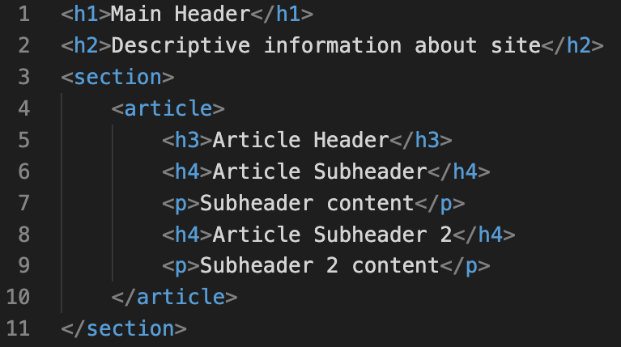

How they work, using meta tags, and header hierarchy
How do search engines work?
Search engines work through three primary functions:1
Crawling: Scour the Internet for content, looking over the code/content for each URL they find.
Indexing: Store and organize the content found during the crawling process. Once a page is in the index, it’s in the running to be displayed as a result to relevant queries.
Ranking: Provide the pieces of content that will best answer a searcher's query, which means that results are ordered by most relevant to least relevant.
Meta Tags: Description and Keywords
Why are meta descriptions important?
Since meta descriptions are displayed on the search results pages with your title tag and your URL path, they can improve or worsen the click rates (also known as CTR - Click Through Rate) of your results. Studies have shown that the keyword in the meta description is a relevance signal for search engines.2
Why are keywords important in SEO?
When people search for something on the internet, they type words into the browser’s search bar, and the top related results appear. How the search engine determines which results to rank depends on whether keywords in those articles are aligned with what the user typed and a wide array of other factors.3
What is link relevance?
Relevance means being closely connected or appropriate to something else, so link relevance means that a backlink coming to your website is closely connected or appropriate for your website or page.
Like your on-page and content, link relevance lets Google know what your site is about. You are making your page relevant for your keywords by optimizing your content and on-page, and likewise you are making your page relevant in Google’s eyes for those keywords with your link building – or more specifically, your link relevance.4
Choose descriptive text: The anchor text you use for a link should provide at least a basic idea of what the page linked to is about.
Write concise text: Aim for short but descriptive text-usually a few words or a short phrase.
Format links so they're easy to spot: Make it easy for users to distinguish between regular text and the anchor text of your links.
Think about anchor text for internal links too: You may usually think about linking in terms of pointing to outside websites, but paying more attention to the anchor text used for internal links can help users and Google navigate your site better.
Headings are phrases at the beginning of a section that explain what it's about. Correct use of headings on a page provides hierarchy and overview, and helps quickly communicate what a web page is about. They help visitors quickly scan a page, and they help search engines quickly understand a page's structure and what it's about.
Headings come in six levels: H1 through H6, of which headings H1, H2 and H3 are most frequently used. Headings are defined in a page's HTML.
The H1 heading is often referred to as the "main heading", while H2-H6 headings are referred to as "subheadings" because they indicate sub-levels.
Example:

HTML Heading Hierarchy
References
Moz, Inc. (2021, May 19). How Search Engines Work: Crawling, Indexing, and Ranking | Beginner’s Guide to SEO. Moz. https://bit.ly/3ud2lJS
Harsel, L. (2020, April 13). Meta Descriptions — Grundlagen der Onpage-SEO. Semrush Blog. https://bit.ly/3vcgVCX
Lahey, C. (2021, January 27). 6 Keyword Optimization Tips for SEO. Semrush Blog. https://bit.ly/3yq9KZM
Tzitzis, C. (2020, December 9). Link Relevance Guide - How to Get Relevant Backlinks. SirLinksalot. https://bit.ly/3fCyUvQ
Google Search Central. (n.d.). SEO Starter Guide: The Basics | Google Search Central. Google Developers. Retrieved May 22, 2021, from https://bit.ly/3ugNRZv
Vessum, S. (2021, March 29). H1-H6 Headings and SEO: everything you need to know. ContentKing. https://bit.ly/3wqbsbH